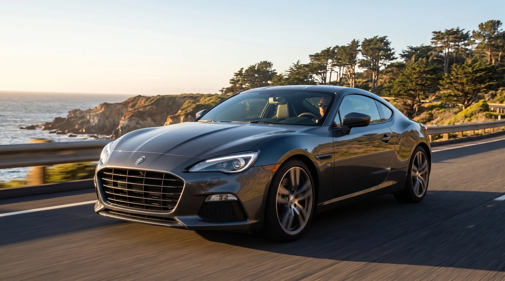
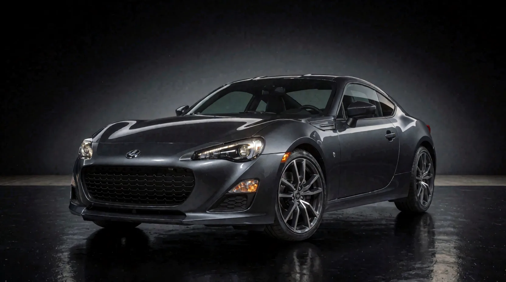
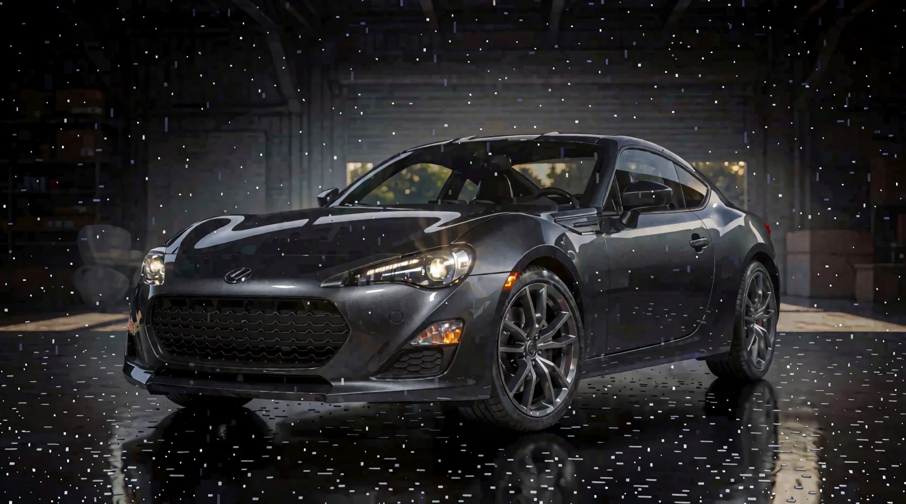
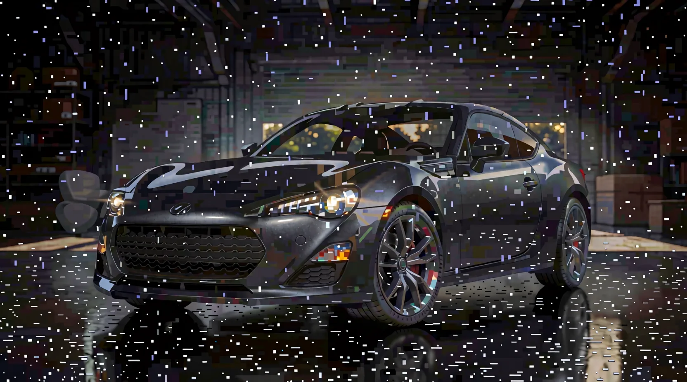
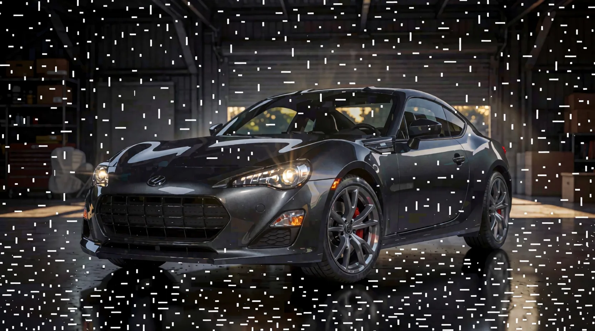
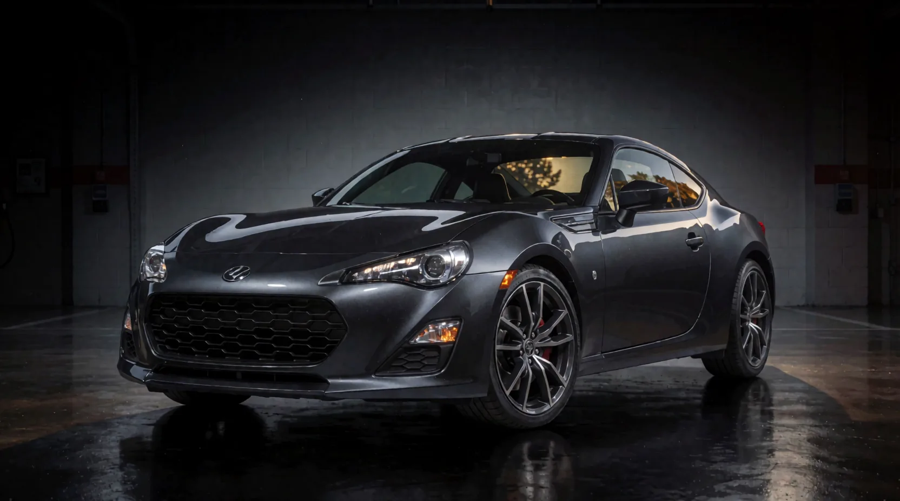
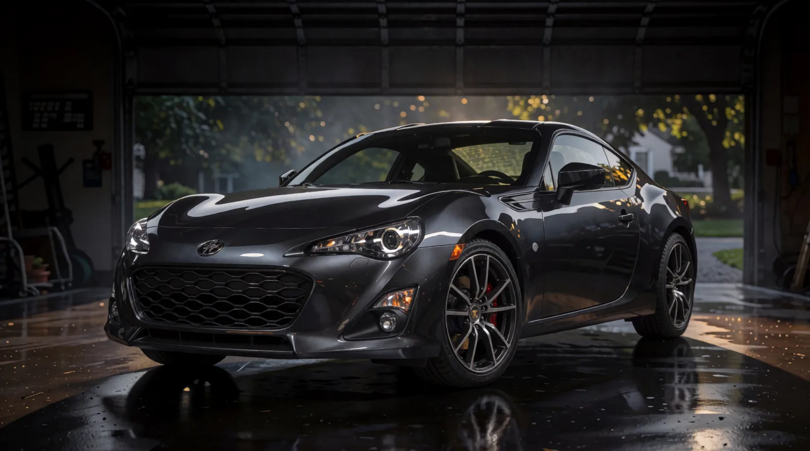
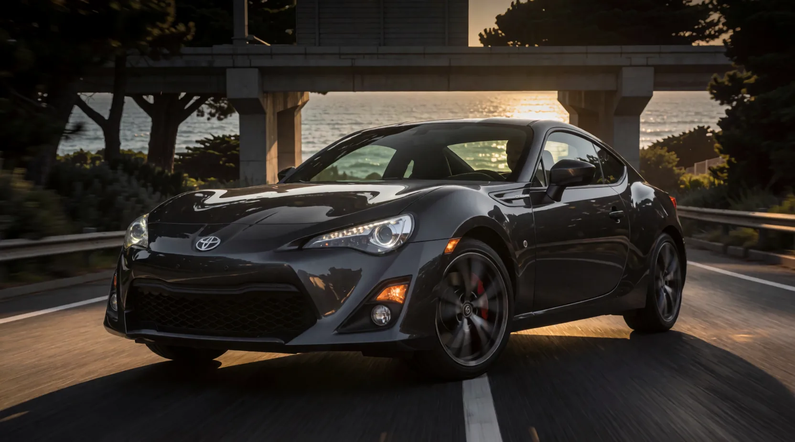

Here each frame is generated from the previous one, so change accumulates. The agent writes waypoints - brighten the studio, open the garage door, out onto the road - always one beat ahead of where the image actually is. It gets one destination photo to steer toward, but that photo never touches the pipeline; it's for the judge's eyes only. The first attempt collapsed into speckle noise; every frame of that failure is kept below because it produced two of the most useful findings: fixed seeds cause artifacts to repeat in feedback chains, and low denoise preserves artifacts rather than repairing them.
Clean lineage only: start → 4 → 6 → 7 → 8 → 9 → 10. The collapsed frames (0–3) and the stalled frame (5) appear further down, unedited.

Created separately (a Gemini img2img pass over the studio shot) to define the destination the judge steers toward.

prompt: the same dark grey sports coupe, studio walls brightening as warm golden daylight floods in from a large opening, glossy black floor beginning to lighten toward pale concrete
| identity_retention | 10/10 |
| step_continuity | 9/10 |
| trajectory_progress | 2/10 |
| technical | 8/10 |
| total | 29/40 |
judge notes: Identity perfect, transition gentle: floor turning speckled wet-concrete with warm gold at the right edge, headlights warming. Studio background barely moved - it is a strong attractor at denoise 0.40.
next mutation: Waypoint 2: explicitly open the room (garage bay + visible outside) to break the black void. Denoise held at 0.40 per policy - progress did move (0 to 2).

prompt: the same dark grey sports coupe parked in an open garage bay, wide roller door open behind it to bright golden-hour sky, warm sunlight streaming in across a pale concrete floor, trees visible outside
| identity_retention | 10/10 |
| step_continuity | 7/10 |
| trajectory_progress | 4/10 |
| technical | 4/10 |
| total | 25/40 |
judge notes: Garage materialized: brick walls, shelving, window openings with golden-hour trees beyond, headlights on. Real trajectory progress. But heavy white speckle noise blankets the entire frame - the frame-0 wet-floor speckle amplified through the chain. First observed collapse artifact of the experiment.
next mutation: RECOVERY FRAME per rubric policy (technical 4 < 6): denoise dropped to 0.30, detail-restoring and cleanliness language, no new scene travel this step.

prompt: the same dark grey sports coupe in an open garage bay with golden-hour daylight streaming in, crystal clear crisp photograph, clean dust-free air, polished car paint, smooth clean concrete floor
| identity_retention | 9/10 |
| step_continuity | 5/10 |
| trajectory_progress | 4/10 |
| technical | 1/10 |
| total | 19/40 |
judge notes: RECOVERY POLICY FAILED - and the failure is instructive. Denoise 0.30 preserved the speckle field and amplified it into dense blocky noise with rainbow pixel patches. Low denoise defends existing pixels including artifacts; artifact removal requires repaint headroom. The frozen policy had it backwards.
next mutation: PROTOCOL AMENDMENT #1 (logged, rubric file untouched): abandon low-denoise recovery; roll back to frame 1 input (mildest corruption) and repaint at denoise 0.50. Frame 2 is quarantined from the chain.

prompt: the same dark grey sports coupe in an open garage bay with golden-hour daylight streaming in, crystal clear crisp professional photograph, clean air, polished car paint, smooth clean concrete floor
| identity_retention | 9/10 |
| step_continuity | 5/10 |
| trajectory_progress | 4/10 |
| technical | 2/10 |
| total | 20/40 |
judge notes: 0.50 repaint cleaned the car body but the background speckle persists - the model now treats it as legitimate texture (confetti/snow attractor). Lineage analysis: artifact originates in frame 0's 'floor beginning to lighten' wording which produced the wet-speckle floor. The chain is contaminated at the root; forward repair is losing to the attractor.
next mutation: AMENDMENT #1 cont.: full chain restart from pristine start_frame.png, jumping directly to the garage waypoint. Frames 0-3 quarantined as the documented collapse case study.

prompt: the same dark grey sports coupe parked in a clean garage bay, wide door open behind it to bright golden-hour sky and trees, warm sunlight across a smooth polished concrete floor, crisp clear professional photograph
| identity_retention | 10/10 |
| step_continuity | 8/10 |
| trajectory_progress | 4/10 |
| technical | 8/10 |
| total | 30/40 |
judge notes: Chain restart succeeded: clean cinderblock garage, sunset visible through the glasshouse, polished wet-look floor WITHOUT speckle, identity perfect. 0.45 from a pristine input bought a big coherent beat. The collapse lineage (frames 0-3) stays quarantined in the log as a case study.
next mutation: Waypoint: exit the building. 0.45 held - it moved a full scene beat cleanly last frame.
prompt: the same dark grey sports coupe rolling slowly out of the garage onto a paved driveway at golden hour, warm sunlight washing over the bodywork, green trees and open sky behind, long soft shadows
| identity_retention | 10/10 |
| step_continuity | 7/10 |
| trajectory_progress | 3/10 |
| technical | 6/10 |
| total | 26/40 |
judge notes: Regression: still inside the garage (closed door behind), a driver materialized, and the floor speckle is RE-EMERGING. Root cause identified: fixed seed in an i2i chain re-applies the identical noise pattern every step, so the speckle attractor keeps regenerating. Fixed seed = correlated noise = artifact lock-in. The t2i attribution rule is anti-productive in feedback chains.
next mutation: PROTOCOL AMENDMENT #2: rotate seed per frame (424242+n) to decorrelate chain noise. Roll back to clean frame 4 input; denoise 0.50 for a decisive exit beat.

prompt: the same dark grey sports coupe driving out through the open garage door onto a sunlit driveway, bright golden-hour sunlight, green trees and open sky ahead, warm light washing over the bodywork
| identity_retention | 10/10 |
| step_continuity | 8/10 |
| trajectory_progress | 5/10 |
| technical | 8/10 |
| total | 31/40 |
judge notes: Seed rotation worked: garage door open to a golden-hour suburban scene (trees, house, bokeh), speckle attractor broken - remaining floor spots read as believable wet drips. Car still inside but the world exists now. Amendment #2 validated in one frame.
next mutation: Waypoint: fully exit the building, full-sun key light replacing interior gloom.
prompt: the same dark grey sports coupe outside on a sunlit driveway at golden hour, entire car bathed in warm direct sunlight, green trees and open sky above, the garage behind it
| identity_retention | 10/10 |
| step_continuity | 8/10 |
| trajectory_progress | 5/10 |
| technical | 7/10 |
| total | 30/40 |
judge notes: Beautiful frame, zero travel: still inside the garage. The doorway composition (dark surround, bright center) is a layout attractor that 0.50 cannot break. Gold spotting creeping back at floor edges. Progress flat 2 consecutive frames -> denoise escalation to 0.55 per policy.
next mutation: Structural relabel: keep the dark-frame/bright-center layout but reinterpret it as an underpass mouth on the coast road - moving the semantics instead of fighting the composition.
prompt: the same dark grey sports coupe driving out from under a dark concrete underpass onto a coastal highway at golden hour, bright ocean and sky opening up ahead, warm sunlight streaking across the road
| identity_retention | 10/10 |
| step_continuity | 9/10 |
| trajectory_progress | 7/10 |
| technical | 9/10 |
| total | 35/40 |
judge notes: Structural relabel succeeded completely: garage mouth became an underpass on a coastal highway - ocean right, sun-glinting road to the horizon, driver present. Maximum semantic travel with minimum visual discontinuity; the layout attractor became an asset. Best beat of the run.
next mutation: Waypoint: exit shadow into full-sun key, introduce motion. Denoise back to 0.50 - the remaining change is tonal, not structural.
prompt: the same dark grey sports coupe driving on an open coastal highway at golden hour, out of the underpass shadow into full warm sunlight, ocean and rocky coast beside the road, trees on the hillside, slight motion blur on the road surface
| identity_retention | 10/10 |
| step_continuity | 9/10 |
| trajectory_progress | 7/10 |
| technical | 9/10 |
| total | 35/40 |
judge notes: Ocean surf now directly behind with golden light on the water, road motion blur beginning - but the bridge above persists. Overhead structures are sticky attractors, same lesson as the garage. Progress flat 2 frames -> escalate denoise and describe what IS above (open sky) rather than negating the bridge.
next mutation: Kill the overhead structure by positively describing open sky; full-sun key on the body; escalation per flat-progress rule.

prompt: the same dark grey sports coupe driving fast on a wide open coastal highway, nothing above the road but golden evening sky, low sun lighting the whole car warmly, ocean and dark green coastal trees beside the highway, guardrail, motion blur on the asphalt
| identity_retention | 10/10 |
| step_continuity | 9/10 |
| trajectory_progress | 9/10 |
| technical | 9/10 |
| total | 37/40 |
judge notes: ARRIVAL. Driving shot achieved: motion blur on road and background, wheel spokes blurred with rotation, golden backlight over the ocean, bridge receding behind the car instead of overhead. Matches the target's key attributes (same car, coastal highway, golden hour, motion). Stop condition met: trajectory_progress 9 AND identity_retention 10.
next mutation: Arrival rule fired. Clean lineage: start -> 4 -> 6 -> 7 -> 8 -> 9 -> 10, with frames 0-3 quarantined (collapse case study) and frame 5 abandoned (fixed-seed stall).